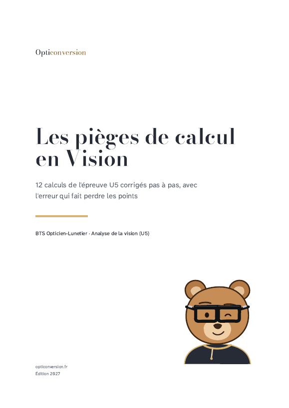

Les pièges de calcul en Vision
Douze calculs de l'épreuve U5 corrigés pas à pas, avec l'erreur qui fait perdre les points. Un PDF de 15 pages à imprimer.
Le PDF arrive par e-mail après le paiement. Écrit par un opticien diplômé du BTS.
Ce qu'il y a dedans
Chaque calcul tient sur une page : l'énoncé, la résolution étape par étape, l'erreur la plus fréquente et la réponse telle qu'on l'écrit sur la copie.
- Prentice : un verre + et un verre −, un verre torique, un écart pupillaire mal pris.
- Aniséiconie : de puissance, puis axile.
- Kératométrie : lire les rayons, puis l'astigmatisme interne.
- Dk/e : une lentille hydrogel, puis deux lentilles pour la nuit.
- Phorie : le Maddox, le critère de Sheard, le jeu phorique.
- Les 12 erreurs sur une page, à relire la veille de l'épreuve.
Un extrait : Prentice, un verre + et un verre −
Yanis, 22 ans, porte OD +2,00 et OG −1,50. Ses verres sont centrés pour la vision de loin. En lecture, son regard passe 1 cm sous les centres optiques. Calculez l'effet prismatique vertical différentiel et dites s'il peut gêner la lecture.
- Prentice sur chaque œil, d en cm. OD : 1 × 2,00 = 2,0 Δ. OG : 1 × 1,50 = 1,5 Δ.
- La base de chaque prisme. OD, verre convergent : la base va vers le centre optique, donc vers le haut. OG, verre divergent : la base va vers le bord, donc vers le bas.
- Bases opposées : on additionne. 2,0 + 1,5 = 3,5 Δ base supérieure sur l'OD.
- Comparer. Au-delà de 2 Δ d'écart vertical, la fusion devient le plus souvent impossible : vision double ou fatigue en lecture.
L'erreur classique. « 2,0 − 1,5 = 0,5 Δ : pas de gêne. » On a soustrait par habitude, alors que les bases sont opposées.
Sur la copie
Prentice, P = d (cm) × |D|. OD : 1 × 2,00 = 2,0 Δ base supérieure (verre convergent) ; OG : 1 × 1,50 = 1,5 Δ base inférieure (verre divergent).
Bases opposées : 2,0 + 1,5 = 3,5 Δ base supérieure OD (base à 90°), au-delà de 2 Δ : fusion difficile en lecture.
Avant d'acheter
D'où viennent les calculs ?
Ce sont des calculs qui reviennent en U5. Les énoncés et les chiffres ont été écrits pour ce guide ; les normes sont celles de la synthèse du jury.
Et le reste de l'épreuve ?
Ce PDF traite ces douze calculs et rien d'autre. Les QCM, les définitions et les sujets blancs restent gratuits sur le site.
Je peux l'imprimer ?
Oui. Il est pensé pour une imprimante noir et blanc.
Une question ?
Écris à opticonversion.bts@gmail.com.